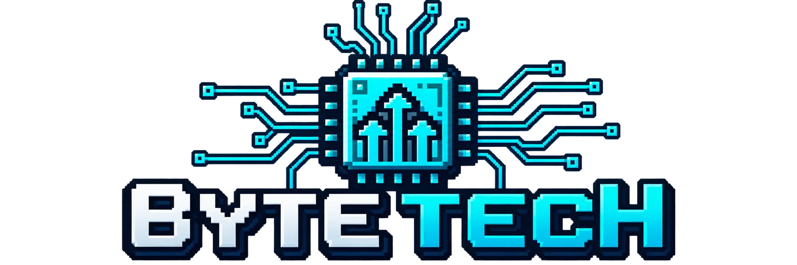

Resolución de problemas críticos en equipos informáticos, optimizando componentes para garantizar la máxima velocidad, estabilidad y rendimiento.
Las computadoras con acumulación de calor, fallas de software o discos lentos reducen drásticamente la productividad. Las personas buscan diagnósticos certeros y soluciones definitivas que revivan sus estaciones de trabajo.
Aplicación de mantenimiento preventivo y correctivo de alto nivel: limpieza profunda de componentes, gestión de cables impecable, optimización de sistemas operativos y reemplazo estratégico de hardware obsoleto.